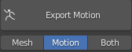
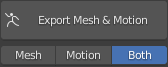

The ‘Character Creator (CC) - Blender - Unity Pipeline’ is an eco-system where character data can be exchanged (in both directions) between CC & Blender and Blender & Unity.
As discussed in the Morph Editing section, it is possible to export from Character Creator to Blender with an Fbx Key which permits the reimport of the model back into Character Creator. The import/export process for this has been simplified with a Character Creator plugin for this purpose:
Download and run the installer from the latest release page.
If you are using Windows Defender, then because this installer executable is uncommonly encountered it may show a “Windows Protected your PC” warning message about using the file:
This can be overridden by clicking on ‘More Info’ and then ‘Run Anyway’.
The installer will place a folder called ‘CC4 Blender Tools’ in the ‘Character Creator 4/Bin64/OpenPlugin’ directory of your CC4 installation.
The plugin will be auto detected the next time you start Character Creator and needs no further intervention. A new ‘Blender Pipeline’ entry will be added to the ‘Plugins’ menu.
If the plugin is correctly installed then it will be recognized the next time Character Creator is started and will add a new ‘Blender Pipeline’ entry in the ‘Plugins’ menu.
Navigate to the ‘Character Creator 4/Bin64/OpenPlugin’ directory and delete the ‘CC4 Blender Tools’ directory.
Path Length Information.
Earlier versions of the plugin (v1.0.9 and earlier) had a path length limit (MAX_PATH) which obeys the Windows API limit of 260 chars. Where path lengths are longer than 260 characters, the re-import of some textures can fail silently and leave the model incompletely textured.
This has been fixed in v 1.0.10 and above - please update the plugin if you are using an earlier version.
The basic ‘round trip’ workflow is as follows: Setup a character in Character Creator; use the plugin to export it to Blender; import and manipulate the character in Blender (e.g. sculpt); export the Character back into CC4 to update CC4 with the changes made in Blender.
Open the Blender Pipeline Export Tool (Plugins -> Blender Pipeline -> Export Character to Blender).
Export Character either as A-Posed Character (Mesh Only option) or In the current character pose (Current Pose option). Depending on your requirements (select via the buttons on the top row - the relevant settings will be auto-filled).
Mesh Only: Round Trip Editing - Export the character as mesh only in the bind pose without animation, with full facial expression data and human IK profile (non-standard),for complete round trip character editing.
Current Pose: Accessory Creation / Replace Mesh - Export the full character in the current pose, for accessory creation or replacement mesh editing.
Begin the export by clicking the ‘Export Character’ button.
This will immediately prompt for a save location and requires no further settings to be made. Save to the location of your choice: This will export the character along with a .fbxkey file which allows for reimport into Character Creator.
In Blender, perform a Standard Import of the exported character.
Please Note: When imported into Blender and clothing items that have had their faces hidden by Character Creator will now have those faces revealed (i.e. you will see the whole meshes) and there may appear to be clip through/mesh penetration (you can hide those faces again once the character returns to Character Creator).
Using Blender, manipulate the character however you see fit (you may not alter the composition of any existing meshes - i.e. you cannot add or remove vertices):
Sculpt/Alter Mesh Topology*
Edit Textures*
Add extra accessory items and use Blender’s shader nodes to shade them
Paint physics weight maps for new or existing items
*Example sculpting and texture editing demonstrated in this video
Material parameters may also be adjusted. Most of these parameters are eligible to be returned to Character Creator, however some are Blender specific and will not be considered when exporting back to CC. The parameters that cannot be returned to CC are highlighted in red (this highlight is only shown when the imported character has a valid fbx key and is suitable for the ‘Round Trip’).
Once finished, the character can be exported back to Character Created by using the ‘Export to CC3/4’ button in the ‘Exporting’ section of the Blender Tool (NB this till only be available if the original model was correctly exported with a fbx key).
This will prompt for a save location and will default to a file name of ‘<original name>_export.fbx’. Since the returning model references all the textures as relative paths and reuses the original exported textures (and any new/edited textures assigned to image nodes will be added to the export .json with their relative paths), then it is safe to use the original export directory as the save location.
Once exported, the CC plugin can be used to re-import the model into Character Creator: using the menu option ‘Plugins -> Blender Pipeline -> Import Character From Blender’. This will bring up a file dialog.
Navigate to the file exported from Blender (default name ‘<original name>_export.fbx’) and click ‘open’.
An import options dialog box will be opened - leave ‘Import Mesh’, ‘Import Textures’ and ‘Import Parameters’ ticked and click ‘Import Character’.
This will prompt to check the file path and fbx key path (these are auto filled) Click ‘OK’ to continue.
After some initial processing a d status report will be shown, giving details of which meshes can be successfully re-imported. Click ‘OK’ to continue.
After further texture processing the process will complete and the character will be manipulable in Character Creator. Please note that any faces that are penetrating outer meshes must be manually re-hidden: please see Hiding Meshes in CC4 for more details.
Please Note:This section deals only with the specific case of taking a character from Character Creator - Editing it in Blender - Then importing it into Unity whilst keeping physics and hidden face data intact for use in Unity.
The use of Blender as an intermediate between Character Creator and Unity enables the use of Blender’s very powerful and varied tool set to directly assist with a Unity project. It also allows the editing of the character in Blender after it has been imported into Unity - thus allowing changes to be made easily without having to go through all of the normal export/import steps again.
This simplified workflow describes the Export from CC to Blender; Manipulation in Blender; Export from Blender into a Unity Project; Further editing in Blender directly from the Unity Project.
Open the Blender Pipeline Export Tool (Plugins -> Blender Pipeline -> Export Character to Blender).
Select the ‘Blender > Unity’ option from the top bar.
Blender to Unity Pipeline: Export the character with hidden faces removed, skin & hair textures baked and with T-pose bind pose, for editing in Blender before exporting from Blender to Unity.
Begin the export by clicking the ‘Export Character’ button.
This will immediately prompt for a save location and requires no further settings to be made. Save to the location of your choice: This will export the character along with a .fbxkey file which allows for reimport into Character Creator.
Import the character into Blender with a Standard Import procedure. This will bring the character into Blender in a T-Pose.
Whilst it is always possible to export to a directory somewhere in the filesystem, and then drag that into the unity project, you may also export directly into the Unity project. When using a .Blend file this offers some distinct advantages.
A link will be made with the export that changes the ‘Export to Unity’ function into ‘Update Unity Project’
This allows any changes subsequently made to be transferred into the Unity project with a single click, rather than by doing another export.
If the character is re-opened from the Unity project (by double clicking on the .Blend file in the Project explorer window) then any edits made can also be transferred directly back to Unity using the ‘Update Unity Project’ button this is especially useful when fine tuning things like cloth physics weight maps.
This is the universally used standard file format, however no quick access from unity is possible, so the character must be re-exported from blender and then re-imported into Unity if you wish to make subsequent changes.
‘Unity Round Trip Workflow’ continues…
Import the character into Unity (only if it was exported to a folder outside of the unity project) by following the procedure here (Importing into Unity)
Follow the instructions in Importing into Unity to correctly import a character into Unity.
Once the character is either imported for the first time or updated, then you will need to build the materials as usual to see any effects (mesh changes will be automatic - but its worth rebuilding the character anyway)
Imported into Unity in t-pose with correct physics colliders and hidden faces.
Please see the CC/iC Unity Tools Usage documentation for a complete overview of the Unity import procedure.
Once rigified via the Rigify Creation Workflow the option to export to a .Blend file is no longer available; furthermore it is no longer possible to return the character back to Character Creator.
The central purpose of rigifying the character is to create or edit animations (see the Animation and Advanced Animation sections for more detail), as such these animations should be used either in Blender itself or downstream in Unity.
To transfer any animations from Blender into iClone, then see the iClone Animation Pipeline webpage for an overview.
Depending on your requirements, export character as ‘mesh only’, ‘motion only’ or ‘mesh and motion’.
Export only the character mesh without any animation information.

Export only the armature (skeleton) and any animation information in the Current Timeline (for that armature)

Export both the character model and any animation in the current timeline.
Tip
Using Motion Only in Unity: Should you wish to use a Motion Only export in Unity, then some manual adjustment steps must be made before the animation can be properly used (only the Mesh Only and Mesh & Motion exports can be processed by using the CC/iC Unity Tools auto-setup).
Dragging the exported Motion Only .Fbx file into the Unity project.
Select it and click on the ‘Rig’ selection button in the Inspector Window to show the Rig import details tab.
This name will be stripped of all the leading characters up to the final ‘|’ symbol and will appear in the available ‘Clips’ and ‘Source Takes’ as shown below in the ‘Animation’ details tab:
This section is retained for information only and details the considerations that need to be made for export to Unity and the settings that need to be made during a manual (Export -> FBX -> Clothed Character) export from Character Creator.
Whilst the information in this section is still valid, the ‘CC4 Blender Tools Plugin’ now dramatically simplifies the whole process and should be used instead.
Unity Friendly Export Options for Manual Export [Legacy]
The basic requirement for the successful use of Blender as an intermediate between Character Creator and Unity is that the hidden face data must be preserved, the physics colliders must be exported and have the correct orientation and that the textures aren’t embedded into the fbx export.
Full Workflow (to preserve hidden faces):
Use the standard Character Creator export function (File -> Export -> FBX -> Clothed Character).
Export with the initial export settings are detailed below:
Required Settings:
Blender as the target tool preset.
Meshonly as the FBX option.
Embed Textures must be unchecked.
Delete Hidden Faces must be unchecked.
Advanced Settings - one advanced setting must also be made (see below).
The single setting that needs to be made in the Advanced Settings is to check T-Pose as Bind Pose.
All other settings should be inherited from the ‘Blender’ tool preset specified in the basic settings.
As a quick reference, the following settings should be (automatically) set in the advanced settings.


{kind=link}
{kind=link}
{kind=link}
{kind=link}
{kind=link}
{kind=link}
{kind=link}
{kind=link}
{kind=link}
{kind=link}
{kind=link}
{kind=link}
{kind=link}
{kind=link}
{kind=link}
{kind=link}
{kind=link}
{kind=link}